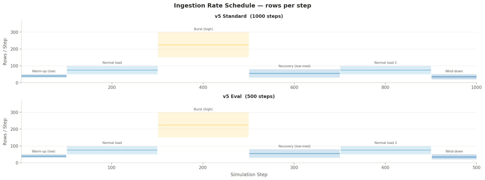
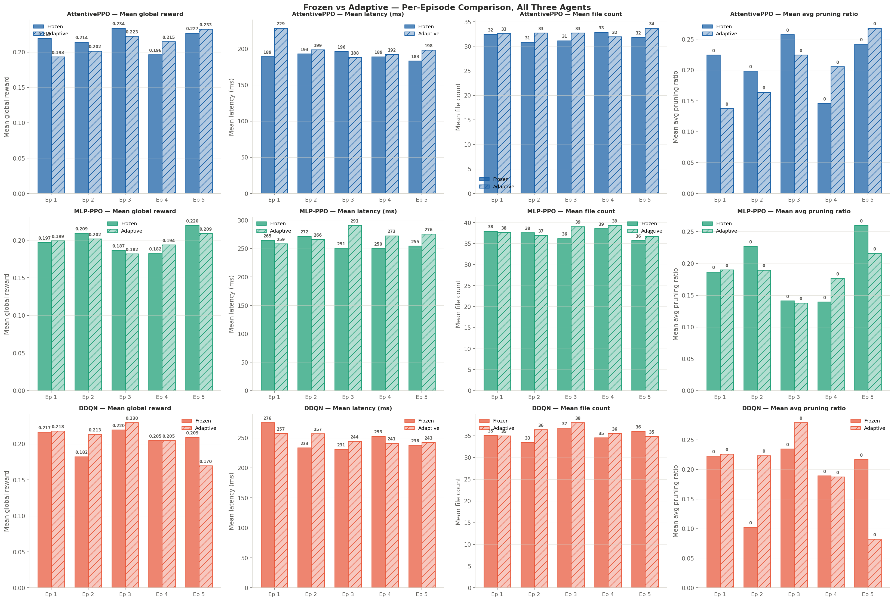
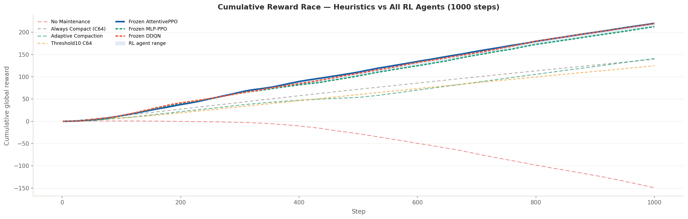
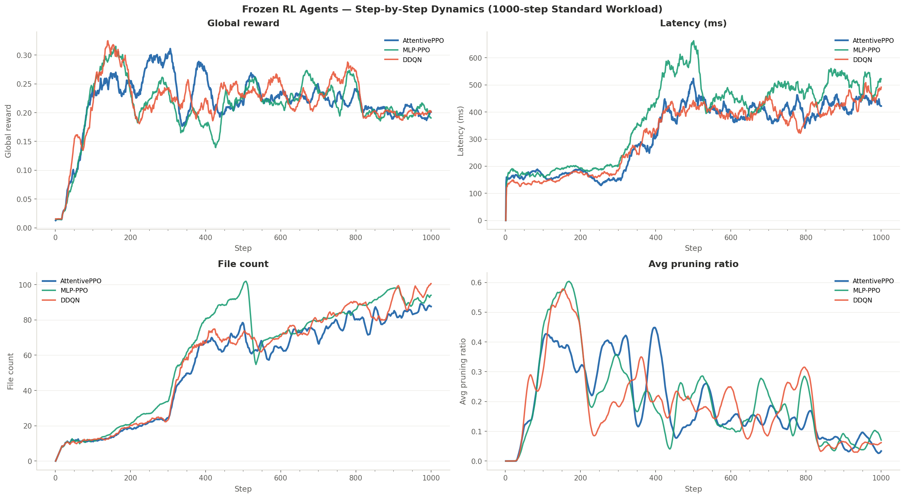
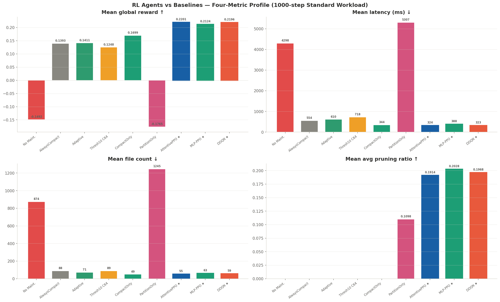
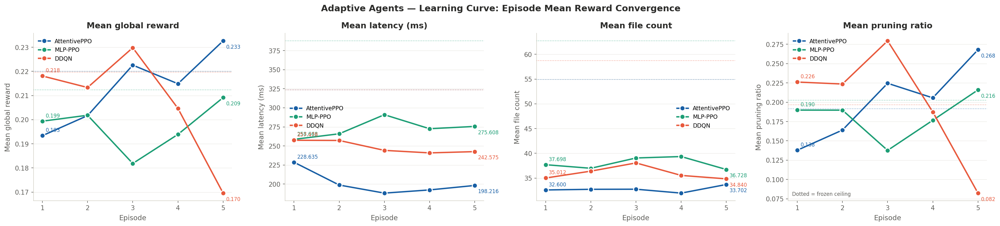
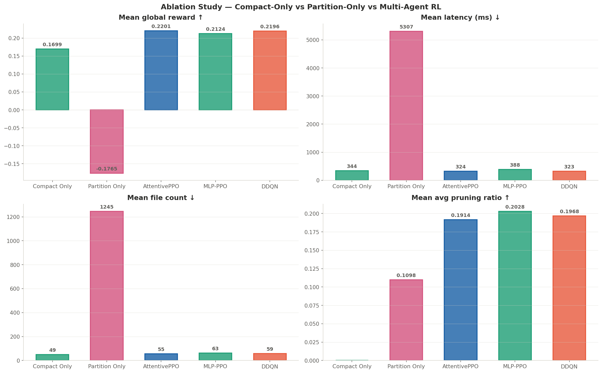

PROOF OF CONCEPT Hierarchical Multi-Agent Deep RL · Apache Iceberg
Lakehouses that maintain themselves.
LakePilot frames data-lakehouse maintenance as a hierarchical reinforcement-learning
problem — a rule-based meta-controller arbitrates between two specialist agents that
jointly optimise compaction and partitioning in real time, adapting to
shifting query workloads instead of obeying fixed heuristics.
Omer Karim, Omar Essameldin, Omar Shrief & Ahmed B. Zaky ·
Egypt-Japan University of Science and Technology
Open table formats such as Apache Iceberg, Delta Lake, and Hudi store data as immutable
Parquet files with a metadata transaction log. That design gives them ACID semantics on
cheap object storage — but it also means every streaming micro-batch lands as new files,
and the partition layout chosen on day one slowly falls out of step with how the data is
actually queried.
Built on open table formats
🧩
The small-file problem
Each ingest commit writes a handful of tiny Parquet files. Over thousands of micro-batches
a table accumulates hundreds of small files. Every query must open, decompress, and
read the footer of each one — so query planning and scan time grow with file count, not with
the data that actually matters. In our environment a neglected table reaches
874 files and a 4,298 ms mean query latency.
🧭
Partition drift
A table partitioned by hour prunes 92% of files for
time-range queries — but if the workload shifts toward region filters, that same layout
prunes nothing. The optimal partition strategy is a moving target that depends on the
current query distribution, which heuristics never observe.
The degradation, on a real run
Actual 1,000-step transition logs — an unmaintained table vs. the AttentivePPO agent. The shaded band is the ingestion burst (steps 301–500, 225 rows/step), where the gap explodes.
File count over time
Query latency over time (ms)
No maintenance — ends at 1,624 files / 15,883 ms AttentivePPO — stays at ~60 files / < 350 ms
Why heuristics fall short
State-of-practice maintenance is either manual or runs on a fixed schedule that is decoupled
from the workload — "compact every 10 steps", "always target 64 KB files". These rules are
workload-agnostic: they cannot tell a quiet period from an ingestion burst, and they never
touch the partition layout. Effective maintenance must instead be joint, online, and
workload-aware.
20→300
rows ingested / step
→
874
files with no maintenance
→
4,298 ms
resulting query latency
The Approach
Separate when to act from what to do
LakePilot is a hierarchical, multi-agent framework. A transparent rule-based meta-controller
decides whether the table needs attention; two specialist RL agents decide how
to act. This split improves interpretability and training stability — each specialist receives
a focused reward signal aligned to its own objective.
⚖️
Meta-Controller
A rule-based urgency arbitrator. Computes a compaction urgency from file count & block
utilisation, and a partition urgency from pruning ratio & workload focus — then delegates to
at most one specialist, or stays idle.
🗜️
Compaction Agent
Picks a target file size — 32 / 64 / 128 KB
or NOOP — to consolidate small files. Trained on a dedicated
compaction reward.
🗂️
Partition Agent
Chooses a partition strategy — by HOUR / REGION / EVENT_TYPE,
REMOVE, or NOOP — to keep the layout
aligned with the live query distribution.
AttentivePPO · attention actor-critic
MLP-PPO · feedforward actor-critic
DDQN · dueling double Q-network
System Architecture
Three tiers, one shared interface
The environment, the meta-controller, and two specialist agents communicate through a shared
model registry exposing a uniform (batch, W, F) → (π, V) API — so
any of three neural architectures can be plugged into either specialist.
The self-attention encoder weights recent observations differentially — exactly what a
non-stationary workload demands when query profiles shift between phases. It earns the
highest mean global reward (0.2201) and the tightest run-to-run variance
(reward CV 5.86%, latency CV 2.33%), and is the only architecture safe for online adaptation.
family
On-policy actor-critic (PPO)
window
W = 10 (compaction) / 20 (partition)
online
Stable — +20.3% under adaptation
Shared input — observation window (batch, W, F)
Flatten
Dense(256, ReLU)
Dense(128, ReLU)
Dropout(0.1)
Actor Dense(Nₐ, softmax) · Critic Dense(1)
The feedforward baseline
A straightforward actor-critic with no temporal mechanism. It achieves the highest mean
pruning ratio (0.203) — most aggressive on partition alignment — but trails on reward
(0.2124) and latency (387.8 ms). Online adaptation converges slowly (+4.9%), suggesting a
warm-up period is needed before gradient updates help.
family
On-policy actor-critic (PPO)
strength
Best pruning ratio (0.203)
online
Slow but stable convergence
Shared input — observation window (batch, W, F)
Flatten
Dense(256, ReLU) + BatchNorm
Dense(128, ReLU) + BatchNorm
Value stream V(s) · Advantage stream A(s,a)
Q = V(s) + A(s,a) − mean A(s) · π = softmax(Q)
Shared output — (π, V)
Off-policy, with a catch
The dueling double-DQN reaches the lowest mean latency (323.4 ms) and the highest
partition reward of any agent (0.0675) — its Q-value formulation seems to exploit
long-horizon pruning. But its experience-replay buffer makes it unstable under online
adaptation (−22.2%): once over-compaction enters the buffer, it reinforces itself.
family
Off-policy value-based (replay buffer)
strength
Lowest latency · best partition reward
online
⚠ Destabilises — keep weights frozen
Where Maintenance Happens
Physical bytes vs. the metadata layer
A common question: "Do you operate on the physical or the virtual layer?" An Iceberg
table is two things at once — immutable Parquet files on object storage (the physical layer)
and a tree of metadata that describes them (the logical/metadata layer). Every ingested
row lands in both. Our agents act at the table-format layer that sits between the query
engine and storage — and the diagram below shows exactly which layer each operation touches.
Compute
Query engine & planner
Apache Spark. The query planner first reads metadata only to decide which files can be skipped (pruning), then scans the surviving Parquet files. It never opens a file it can prune.
Spark SQLpartition pruningpredicate push-down
⌄
Catalog
Table pointer
A single pointer to the current table-metadata file. Swapping this pointer atomically is what gives Iceberg its ACID commits.
current snapshot ref
⌄
Metadata layer · logical
Snapshots → manifest list → manifests
The "virtual" layer. For every data file it stores partition values, row counts, and per-column min/max statistics — without ever touching the data. This is what the planner reads to prune, and what compaction & partitioning rewrite.
The raw bytes on object storage. Each ingest commit writes new small files; nothing is ever modified in place. This is where the small-file problem physically accumulates.
part-0001.parquetpart-0002.parquet…874 small files
📥 Ingestion
Writes new Parquet files and commits a new snapshot + manifest entry describing them.
writes BOTH layers
🔎 Query planning
Reads manifests to prune by partition value & column stats, then opens only the surviving data files.
reads METADATA → physical
🗜️ Compaction agent
Rewrites many small Parquet files into fewer large ones, then commits a new snapshot pointing at them.
rewrites BOTH layers
🗂️ Partition agent
Evolves the partition spec in table metadata — a pure metadata change that re-groups how future files are pruned. No data is moved.
METADATA only
The short answer for the professor
Both — but never the raw bytes directly. Our agents observe statistics that live entirely
in the metadata layer (file count, pruning ratio, partition skew, column stats) and issue
Iceberg maintenance operations. Compaction is a physical-data rewrite that is then
committed to metadata; partitioning is a purely logical metadata-layer change. Neither
bypasses the transaction log — every action is an atomic, auditable snapshot commit.
The planner's cost scales with file count
Real run data — every point is one query step. As metadata accumulates manifest entries for hundreds of tiny files, planning + scan latency climbs with it.
File pruning — partition alignment in action
100 data files. Toggle the partition strategy to see how many files a TIME_RANGE query must actually scan (red) versus skip (faded).
The Environment
LakeGym v5 — a real Iceberg table as a gym
Each discrete step (i) ingests a batch of rows into a real Apache Iceberg table on Spark,
(ii) lets the active policy take one of eight actions, (iii) draws and executes a query from
the current workload profile, (iv) computes three reward signals, and (v) builds the next
observation vector.
Powered by
Table schema & physics
An 8-column events table: device_id, timestamp,
temperature, humidity, region, event_type, sensor_value, payload. Each row ≈ 200 bytes;
the target file size of 64 KB ≈ 50 rows per Parquet file.
columns
8 (mixed string / double / timestamp)
row size
≈ 200 bytes
backend
PySpark + Apache Iceberg in Docker
Observation space (oₜ)
A window of per-step feature vectors capturing the table's current health and recent workload:
The joint action space combines three compaction targets, four partition operations, and a
no-op. Each action carries a normalised cost used by the reward function — partitioning is the
most expensive operation (2.0), REMOVE_PARTITION the cheapest
structural change (0.7), and NOOP is free.
A structured, phase-shifting workload
The v5 standard workload runs 1,000 steps split into five equal query-profile phases
(time → region → mixed → type → scan heavy). Ingestion follows six phases: a warm-up, normal
load, a burst to 225 rows/step (steps 301–500), recovery, a second normal load, and a
wind-down. The v5 eval workload is a 2× compressed 500-step version for
multi-episode consistency tests.
warm-upnormalburst 225recoverynormal-2wind-down

Ingestion rate scheduleRows per step across both workload plans; the burst phase peaks at 225 rows/step.
Profile
Each profile sets the sampling probability of the five query templates. The dominant query type in each focused profile is highlighted — this is what the partition agent must detect and align to.
Why alignment matters
File pruning at query time depends entirely on whether the partition strategy matches the
query predicate. TIME_RANGE queries skip 92% of files
under hourly partitioning — but the same layout prunes nothing for region or type filters.
FULL_SCAN is irreducible at 0% under every strategy. Only
semantically-aligned pairs achieve non-zero pruning.
Two specialist signals provide focused training gradients — compact reward rewards
consolidating files toward the target size, partition reward rewards improved pruning.
The global reward (latency + file count + pruning + utilisation, with
L_max = 15,000 ms) is the primary optimisation target and the metric all 22 policies are
ranked on.
Experiment Design
How every policy was measured
Three evaluation protocols, 22 policies, and a cost model that projects every step onto cloud pricing.
📏
Standard evaluation
All policies run on the 1,000-step v5 standard workload. RL agents use frozen final-checkpoint
weights; heuristic rewards are recomputed post-hoc with the v5 reward function to ensure a fair
comparison.
🔁
Multi-episode consistency
Each RL agent runs five independent 500-step episodes on the compressed eval workload. The
coefficient of variation (CV) across episodes quantifies run-to-run reliability —
n = 5,000 step-level observations per agent.
🧠
Adaptive evaluation
Starting from the frozen checkpoint, weights are updated online each step (PPO for the
actor-critics, online DQN for the value agent). Episode 1 uses the checkpoint; later episodes
continue from the updated weights.
The 22-policy field
14
Heuristic compaction policies — always-compact (C32/C64/C128), periodic (every 5 or 10 steps), threshold-triggered, random, and adaptive-frequency compaction.
3
Workload-aware heuristics — WorkloadAwareThreshold, PartitionExploration, and Random_Partition.
2
Ablations — CompactOnly and PartitionOnly: the AttentivePPO architecture restricted to a single action sub-space.
3
Full multi-agent RL systems — AttentivePPO, MLP-PPO, and DDQN.
Cost model
C = C_q·Σℓ + C_c·N_c + C_s·Σσ
Query at $0.01 / 1,000 ms, compaction at $0.005 / operation, storage at
$0.000001 / KB-step. RL compaction counts are averaged over five independent episodes so a
single lucky run can't skew the totals. Savings are reported relative to the no-maintenance
baseline ($49.86 / episode).
Simulation Workflow
What happens in a single step
The five-stage loop that repeats for every one of the 1,000 steps in an episode.
①
Ingest
A batch of rows (20–300, per the ingestion schedule) is appended to the live Iceberg table, creating new Parquet files.
②
Act
The meta-controller scores urgency and delegates; the chosen specialist selects one of eight actions and Spark executes it.
③
Query
A query is sampled from the current workload profile and run against the table; latency and pruning are measured.
④
Reward
Compact, partition, and global rewards are computed from the resulting table state and query cost.
⑤
Observe & log
The next observation vector is constructed and the full transition — step, action, latency, file count, reward — is written to a CSV in LakeGymLite/results/ for offline analysis in the research notebook.
Training & Data Collection
How the agents learn — and from what data
The six specialists (three architectures × two roles) are each trained differently, but
all follow the same shape: an offline pre-training phase that learns from static logs,
then a benchmark phase that tests those weights on a different, unseen 500-step
workload — once with weights frozen, once allowing them to adapt online. Every step is a
(state, action, reward, next-state, done) transition tuple. The
meta-controller is rule-based and never trained.
STAGE 1
Collect
Heuristic & baseline policies are run in the simulator, logging every step as a transition row into 42-column CSVs.
→ transition logs (≈6,000 steps)
→
STAGE 2 · OFFLINE
Pre-train (AWR)
Each specialist learns a policy from the static logs via Advantage-Weighted Regression — no environment interaction.
→ offline_*_agent.weights.h5
→
STAGE 3 · BENCHMARK
Test on a new workload
The offline weights are evaluated on a different, unseen 500-step workload — once frozen, once adapting online.
the same features, one step later — used to bootstrap value targets
·
done
0 / 1
Columns 9–25 hold the current observation, column 3 the action, columns 5–7 the three reward
signals, and columns 26–42 the next_* observation. A 1,000-step
episode therefore produces 1,000 training tuples; the five-episode evaluations yield 5,000.
What each agent actually sees
Each specialist receives a different feature subset, individually normalised so every signal lands in a comparable range before it reaches the network.
#
Feature
Normalisation
Tuned for the small-file signal
The compaction agent watches file count, block utilisation, total size, file-size skew and
time-since-last-compaction. steps_since_compact uses an
exponential decay exp(−x/10) so recent compactions strongly
suppress the urge to act again — mirroring the meta-controller's 4-step cooldown.
#
Feature
Normalisation
Tuned for workload alignment
The partition agent's defining inputs are the five query-history fractions and the
pruning ratios — exactly the signals needed to tell whether the current layout matches
the live workload. The current partition_strategy is one-hot
encoded, expanding 11 raw fields to a 14-dim vector.
Stage 2 · Offline pre-training — per architecture
Each architecture is pre-trained from the static logs with its own offline
method — and no two are alike: AttentivePPO uses advantage-weighted regression, MLP-PPO uses a
clipped-PPO surrogate, and DDQN uses offline Double-DQN over a replay buffer. All are confirmed
from the training notebooks; the only inferred piece is the DDQN compaction role, taken
to mirror its partition sibling.
Final · from notebooks
Advantage-Weighted Regression
Reward shaping · partition specialist
Offline targets blend three signals so the agent learns
workload alignment, not just raw outcomes — e.g. a time_heavy
phase should map to HOUR partitioning:
Signal
Weight
Captures
Balanced per-action sampling counters the heavy NOOP skew in the logs, so rare partition actions still receive gradient.
Final · from notebooks
Offline clipped-PPO
How it differs from AttentivePPO
Same on-policy PPO family, but two differences. The policy is a flattened MLP rather
than an attention encoder, and the offline objective is the clipped surrogate with
standardized advantages — instead of AttentivePPO's exponential AWR weighting. Both compaction
(8 features / 4 actions / W=10) and partition (14 features / 5 actions / W=20) roles use the
identical settings shown here.
Final · partition confirmed
Offline Double-DQN
Value-based, not policy-gradient
Structurally distinct from the two PPO agents: a dueling network splits value V(s) and
advantage A(s,a), and learning is off-policy from a replay buffer seeded with the logs, using a
Double-DQN target to curb Q-value over-estimation.
Stage 3 · Benchmarking on an unseen workload
This stage is not further fine-tuning toward a deployment policy — it is a generalisation
test. The pre-trained agents are dropped into a different, compressed 500-step workload
(5 independent episodes) whose phase pattern they never saw during offline training, and evaluated
in two modes. Each specialist still acts on its own reward; global_reward
is the headline metric all 22 policies are ranked on.
🧊
Frozen
Weights held fixed for the whole test.
Measures out-of-the-box generalisation — how well the offline policy transfers to a workload it was never trained on. Source of the consistency results (reward/latency CV across episodes).
5 × 500 stepsCV reliability
🔥
Adaptive
Weights keep updating online during the test.
Measures real-time adaptation to the new distribution. The per-step update rules are below. This is where AttentivePPO climbs +20.3% while DDQN destabilises −22.2%.
episode-over-episodefrozen vs adaptive

Frozen vs. adaptive — per-episode rewardThe two test modes side by side for all three agents across the five 500-step evaluation episodes. Full adaptive trajectories are in the Results section.
Per-step update rules used in adaptive mode
In adaptive mode only, the two PPO architectures update on-policy from fresh rollouts; the DDQN updates off-policy from a replay buffer — the structural difference that explains their opposite adaptation behaviour.
01
Roll out
The agent acts in the live simulator; each step logs a transition tuple.
→
02
Extract features
Per-agent feature subset is sliced from the obs and normalised.
→
03
Compute targets
PPO: GAE advantages from the specialist reward. DQN: Bellman targets via the target network.
→
04
Update
Clipped policy-gradient (PPO) or Q-regression (DQN) over minibatches.
PPO — AttentivePPO & MLP-PPO
DDQN
Why this matters for the results
This is the root of the adaptive-learning finding: PPO's on-policy rollouts always reflect
the current policy, so online updates stay stable (AttentivePPO +20.3%). DDQN's replay buffer
mixes in stale transitions — once over-compaction enters the buffer it reinforces itself, which is
why DDQN destabilises under online adaptation (−22.2%) and is best deployed frozen.
Results
What the data shows
Every chart below is rendered from the metrics in the paper's tables; the static figures are the
exact plots generated by the research notebook. Hover any chart to inspect values.
1 · The RL agents sweep the top three spots
All three hierarchical agents outrank every one of the 17 heuristic and workload-aware baselines on mean global reward. AttentivePPO leads at 0.2201 — a +17.8% gain over the best pure-compaction heuristic — while no-maintenance and partition-only collapse into deeply negative territory.
Rank
Policy
Reward
Latency (ms)
Files
Pruning
Reward decomposition
Only the three RL agents achieve a positive partition reward — heuristics never change the layout.

Cumulative reward race (1,000 steps)The RL ensemble diverges sharply upward from all baselines during the burst window (steps 301–500). Final reward: AttentivePPO 220.1 vs best heuristic 141.1.
2 · No single architecture dominates
Normalised across four metrics, AttentivePPO leads on reward and file efficiency, DDQN on latency, and MLP-PPO on pruning ratio. Each architecture has a distinct operational sweet spot.
Normalised four-metric profile
Each metric scaled to [0,1] within the three-agent cohort — higher is always better.
Mean global reward (±s.d.)
Five-episode averaged step-level reward, n = 5,000 per agent.

Step-by-step dynamicsGlobal reward, latency, file count, and pruning ratio over the full 1,000-step workload for all three frozen agents.

RL vs baselines — four metricsThe RL agents (starred) uniformly top the reward ranking while staying competitive on latency and file count. PartitionOnly is an extreme outlier.
3 · The agents learned to mostly do nothing — wisely
All three agents stay idle in 76–79% of steps: selective intervention is a robust learned property. When they do act, AttentivePPO favours large 128 KB compactions and issues the most partition actions; MLP-PPO concentrates almost entirely on 64 KB.
Action distribution by agent
Percentage share of each action, pooled over five 1,000-step episodes.
Compaction target-size sensitivity
Always-compact at three target sizes. 128 KB is best; 32 KB over-compacts catastrophically.
4 · Online adaptation is architecture-dependent
On the unseen 500-step benchmark, the adaptive mode lets weights keep updating. AttentivePPO climbs +20.3% and eventually exceeds its own frozen ceiling. DDQN, by contrast, degrades −22.2% as its replay buffer reinforces over-compaction — a clear on-policy-vs-off-policy constraint. (See Training → Stage 3 for the frozen vs. adaptive setup.)
Adaptive reward per episode
Mean global reward across five 500-step episodes; dashed lines mark each agent's frozen ceiling.

Learning-curve convergenceEpisode-mean reward with frozen-ceiling reference lines. AttentivePPO converges upward; DDQN collapses by episode 5.
5 · Joint control & the bottom line
Ablations confirm a synergy that neither sub-agent achieves alone: the full system beats CompactOnly by +25–30% and PartitionOnly by +220–225%. Compaction is a prerequisite for effective partitioning. Projected to cloud pricing, the RL agents cut total cost by 81–83%.
Estimated cloud cost per episode
Stacked query + compaction + storage cost. RL agents cluster at the bottom near $8.5–9.3.

Ablation — joint vs isolated controlCompactOnly and PartitionOnly single-agent systems against the three full multi-agent RL systems. The gains are non-additive.
6 · Run-to-run consistency
AttentivePPO is the most reliable agent — the tightest coefficient of variation on reward (5.86%), latency (2.33%), and file count (2.40%) across five independent evaluation episodes.
Metric
AttentivePPO
MLP-PPO
DDQN
Full notebook figure gallery
All publication figures, generated directly from the transition logs. Click any figure to enlarge.
Key Findings
Six takeaways
1
Joint control is essential
+224% over partition-only and +29% over compaction-only. A layout optimised for query pruning cannot be sustained without concurrent compaction to prevent file proliferation.
2
Attention pays off
AttentivePPO beats MLP-PPO by +3.5% reward with lower per-episode variance — its self-attention encoder adapts fastest to non-stationary workload phases.
3
Selective intervention emerges
Every agent learned to stay idle >76% of the time. Compulsive maintenance is penalised; doing nothing is often the optimal move.
4
The agents discovered the right file size
Without being told, AttentivePPO gravitated to large compactions — 128 KB dominates its compaction actions, the empirically optimal target under bursty ingestion.
5
Off-policy ≠ online-safe
DDQN's replay buffer destabilises under online adaptation (−22.2%). Frozen weights are preferred for deployment; online tuning should be restricted to on-policy methods.
6
Real cost savings
Projected to cloud pricing, the RL agents cut total cost 81–83% versus no-maintenance — driven primarily by latency reduction, not just rearranging small files.
Scope & Future Work
A proof of concept — and what's next
This study is deliberately a proof of concept. The micro-scale lets 1,000-step episodes finish on
modest hardware, but the dynamics — pruning math, overhead distributions, ingestion physics —
mirror a production lakehouse. The advantages reported here only grow more pronounced at scale.
Current scope
A single table schema and five query profiles; a cost model with fixed
per-operation prices; training on the v5 workload. Generalisation to substantially different
regimes (append-only, deletion-heavy) is untested, and training-time budgets are not yet reported.
Where it scales
At TB-range storage and real cloud pricing, the latency and cost gaps that
already favour the RL agents widen further. Next steps: multiple schemas, learned (rather than
rule-based) meta-control, and richer workload generalisation.